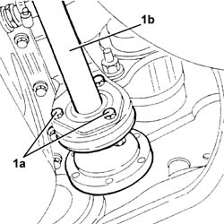
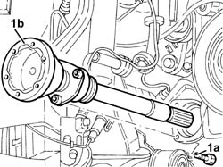
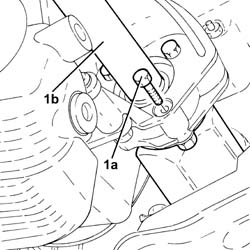

2710A30 intermediate drive shaft - r + r with r/h drive shaft removed
- Path
- Procedures > 27 AXLE > 2710 FRONT AXLE > 2710A drive shafts and joints > 2710A30 intermediate drive shaft - r + r with r/h drive shaft removed
- Kind
- repair procedure (removal / refitting; the operation number is the code)
- Applies to
- engines: 1.6 TS , 1.8 TS, 2.0 JTS, 2.5 V6, 1.9 JTD 8v , 1.9 JTD 16v, 2.0 JTS, 2.4 JTD 10v, 2.4 JTD 20v; all production periods
- Interactive page
- https://sloeber94.github.io/elrnDB-a156/en/#/3238021
Applies to: engines: 1.6 TS , 1.8 TS, 2.0 JTS, 2.0 JTS; all production periods
 Removing
Removing
 Refitting
RefittingPosition the vehicle on the ramp
Ensure that the ignition key is in the OFF position, then disconnect the negative battery terminal (-).
 | Name | Connector |
|---|---|---|
- | Battery |
Applies to: engines: 1.6 TS , 1.8 TS; all production periods
Applies to: engines: 2.0 JTS, 2.0 JTS; all production periods
Proceed with removal 1076B18 rigid section of exhaust pipe between catalytic converter and silencer - r + r
Applies to: engines: 1.6 TS , 1.8 TS, 2.0 JTS, 2.0 JTS; all production periods
1. Undo the bolts (1a) and remove the intermediate drive shaft (1b) by withdrawing from its seat.

Applies to: engines: 1.6 TS , 1.8 TS, 2.0 JTS, 2.0 JTS; all production periods
Refitting
RemovingPlace the intermediate driveshaft back in its housing by pushing through the mount.
Tighten the bolts fixing the intermediate driveshaft to the support to the recommended torque.
 | Fastening | Component | Ø | Value (daNm) |
|---|---|---|---|---|
- | Bolt | INTERMEDIATE DRIVE SHAFT | M8 | (Support side) 2.5 ÷ 2.8 |
Applies to: engines: 1.6 TS , 1.8 TS; all production periods
Applies to: engines: 2.0 JTS, 2.0 JTS; all production periods
Proceed with refitting 1076B18 rigid section of exhaust pipe between catalytic converter and silencer - r + r
Applies to: engines: 1.6 TS , 1.8 TS, 2.0 JTS, 2.0 JTS; all production periods
7055B54 under-engine guard - r r .
Connect the negative (-) battery terminal
Remove the car from the ramps.
Applies to: engines: 2.5 V6, 1.9 JTD 8v , 1.9 JTD 16v, 2.4 JTD 10v; all production periods
Removing
RefittingHand-tighten the upper wishbone nut to the wheel hub knuckle.
1. Undo the bolts (1a) and remove the intermediate drive shaft (1b).

Applies to: engines: 2.5 V6, 1.9 JTD 8v , 1.9 JTD 16v, 2.4 JTD 10v; all production periods
Refitting
RemovingFit the intermediate drive shaft and tighten the bolts to the specified torque.
| Fastening | Component | Ø | Value (daNm) |
|---|---|---|---|---|
- | Bolt | INTERMEDIATE DRIVE SHAFT | M8 | 2.5 - 2.8 |
Applies to: engines: 2.4 JTD 20v; all production periods
Removing
Refitting1. Undo the bolts (1a) and remove the intermediate drive shaft (1b).

Applies to: engines: 2.4 JTD 20v; all production periods
Refitting
RemovingRefit the intermediate half shaft in its seating and tighten its bolts to the specified torque.
| Fastening | Component | Ø | Value (daNm) |
|---|---|---|---|---|
- | - | - | - | - |
Refill the manual gearbox and differential fluid - 0010T41 MANUAL GEARBOX OIL - Check level and top up, if necessary .
Topics linked from this page (4)
- 1076B18 rigid section of exhaust pipe between catalytic converter and silencer - r + r
- 1076B50 exhaust pipe attachment to engine - r + r
- 7055B54 under-engine guard - r r
- A1B Battery ( BATTERY NEGATIVE )